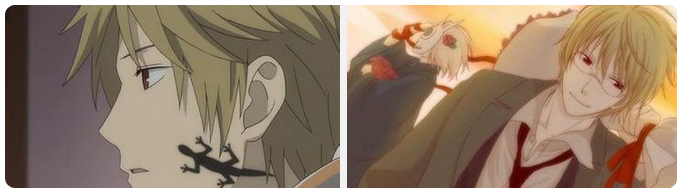
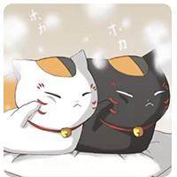

Mingshou Monday
|
On Monday, one of the characters in the Japanese anime "xiamu Youren Zhang" was a popular actor and demon killer. Part time actor work, and the protagonist Xia muguizhi can see monsters, but hate monsters. After being influenced by summer eyes, it is no longer so annoying. He is very concerned about Xia mu.
|
Character setting
|
I often wear a fisherman's hat when I go out, a shirt and a suit most of the time, and a T-shirt occasionally when I am at home. My special skill is to shine a dazzling star and always keep a modest smile. Wearing glasses with no degree, you can't wear them at home (glasses are for seeing the world of monsters through the glass). There is a lizard like mole on the body (invisible to ordinary people, it's a monster)

Back to role introduction
|
|
|
| Xia Mu You Ren Zhang is a cartoon work of Luchuan. The style of cartoon is slightly different from that of animation. Xia Mu Guizhi got those contracts from the relics of his grandmother Xia Mu Lingzi; Friends account;, He decided to return the names of the monsters in his friend's account one by one. Around xiamu, all kinds of monsters began to gather & middot& middot;& middot;& middot;& middot;& middot; Xia muguizhi, a young man who can see monsters, tells us strange, sad, nostalgic and touching stories together with the monster spots on the appearance of Zhaocai cat. |
|  |
|